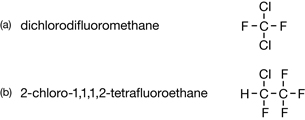

Module 6—Petrochemicals
Lesson 2—Organic Halides
 Get Focused
Get Focused
© Diego Cervo/shutterstock
Hey, teenagers are still growing, and they are often hungry. So it makes sense that the refrigerator door might be the first door you open in the morning and the last door you close at night. At one time, homes relied on an icebox and daily deliveries of ice to refrigerate food. Today, refrigeration is a heavily relied-upon technology.
Did you know that the technology used to operate a modern refrigerator relies on the energy change that occurs when certain molecules undergo a phase change? This technology goes back to the mid-1700s. Unfortunately, the first refrigerants (like diethyl ether and ammonia) posed a health risk and were not the safest substances to use.
In a quest to find safer refrigerants, a class of organic compounds called chlorofluorocarbons (CFCs) were developed and tested. The first CFCs were found to have chemical and physical properties suitable for use in refrigeration systems, and they were non-toxic. As a result, CFCs were quickly adopted for use as refrigerants.
Consider the structural formulae for two CFCs:

CFCs and other organic molecules can contain halogens. In Lesson 2 you will learn about organic halides, including how they are made and used. Organic halides are halogen-containing organic molecules.
Consider the following questions as you complete Lesson 2:
- What are organic halides?
-
In what reactions are organic halides involved?
 Module 6: Lesson 2 Assignment
Module 6: Lesson 2 Assignment
There is no assignment for this lesson. However, you will be asked to submit samples of your work to your teacher where instructed.
You must decide what to do with the questions that are not marked by the teacher.
Remember that these questions provide you with the practice and feedback that you need to successfully complete this course. You should respond to all the questions and place those answers in your course folder.